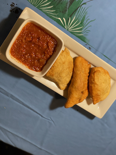

Gato
west african fried bread with fish inside

Fried fish and bread inside
Ingredients
- 1 sweet potato
- 4 carrots I used orange purple and yellow carrots
- 1/2 a head of cabbage
- 2 bell peppers
- 3 scotch bonnet/ habanero peppers
Steps
- With a mortar and pistol or in a food processor, grind the parsley, garlic, scotch bonnet, bullion black pepper and salt into a rough paste.
- Poke two holes into the flesh of the fish and stuff them with the parsley mix.
- Broil or Fry the fish until it is golden brown on each side, and set aside for the sauce.